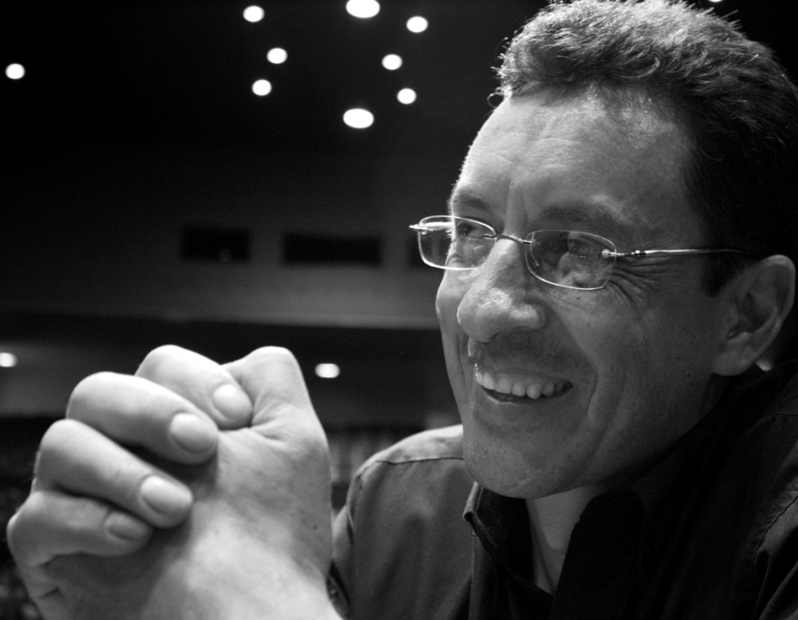
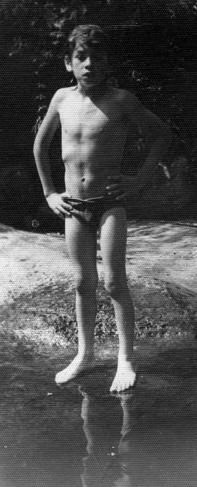
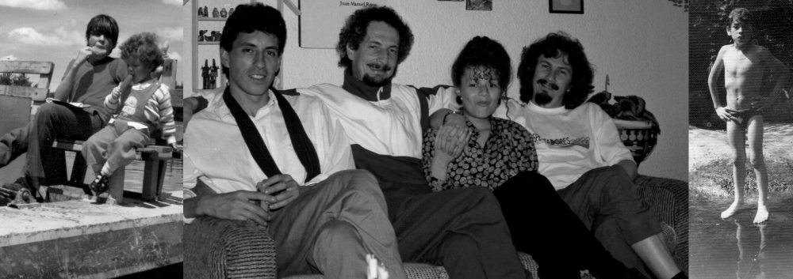
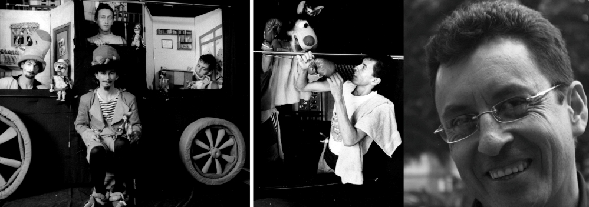
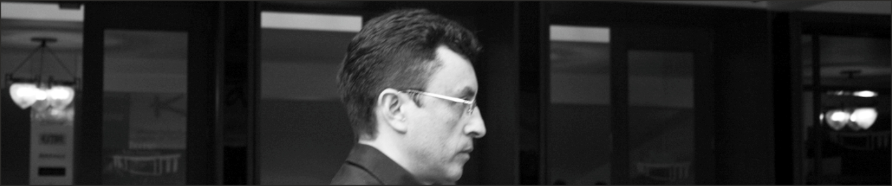

Entrevista a Ramiro Álvarez
En el teatro están las sublevaciones del espíritu
Por: Cristóbal Peláez González
Transcripción: Karen J. Crespo
“No es sólo el Pablo Tobón, aquí todo se me ha convertido en la ciudad. No estoy en el estrecho marco del edificio, estoy es con todos los grupos, con el grueso del movimiento teatral. El círculo se ha ampliado: es una sociedad que me está brindando muchas cosas, está haciéndome sentir un poquito importante”.

Fotografía: Juan David Correa
Inauguró milenio como director técnico del Teatro Pablo Tobón Uribe un hombre alto, flaco, pintoso, con acento no pronunciadamente rolo, que vino de no se sabe donde y que muy rápidamente se ganó el afecto de toda la comunidad teatral. A partir de entonces ese lugar que desde hace seis décadas es símbolo y corazón del centro de Medellín tiene entre sus telones y tramoyas a un duende artístico. Ramiro Álvarez ha calzado a la perfección en el “viejo Pablo”. Tranquilo y elegante. Amable y solidario. Serio y sonriente. Estricto y alcahuete. Veloz y eficaz. ¡Qué delicioso es hacer teatro con Ramiro!
Yo no sé si soy de Ramiriquí
Mi historia es un poco extraña, nací quién sabe en dónde. Alcanzo a entender que es un sitio en los límites de Boyacá y Cundinamarca, porque esas son como mis raíces; tal vez por eso me encanta tanto la comida de esos campos. Provengo de una familia pobre, muy pobre; mi papá era obrero y mi mamá era ama de casa, o algo así, no lo sé.
¿Naciste en el campo?
No tengo idea, no me acuerdo, no me llegan los recuerdos hasta esa época.

¿Un deliberado borrón?
Es que todo se parte en dos en ese punto de mi vida. Hacia los cinco años, víctima de esa pobreza y de esa forma de educación, me sentí amenazado y me fui de la casa. A partir de ahí viví en la calle algunos meses, y ya después fui adoptado por una persona que me encontró.
¿Huiste de niño para Bogotá?
Ya vivía en uno de los barrios de Bogotá, Atahualpa. De allí me escapé, y después de mucho caminar y atravesar potreros llegué a Fontibón. Dormía en los terminales de buses y comía lo que me daban en los restaurantes y panaderías.
Lejos del nido
Huí de mi casa porque amenazaban con pegarme. Mi papá, un hombre grandísimo, se iba desde por la mañana y llegaba por la noche. Mi mamá entonces se había ido de la casa, nos abandonó, y tuve una madrastra que amenazaba con castigarme todo el tiempo, me hacía una guerra psicológica continua. Una noche estaba durmiendo en una banca del parque de Fontibón, y pasó un señor que se llamaba Rodrigo Álvarez. Me vio ahí acostado, me despertó y me dijo que si quería ir a la casa de él, que me fuera a vivir allá, y yo bien niño pues me daba como igual, o no sé, y le dije “bueno, vamos” y allá llegué. Al día siguiente, cuando me desperté, me encontré con mis tías y mis tíos, con todos los que de allí en adelante iban a ser mi familia.
Así huyen y así se despiertan muchos personajes de Samuel Beckett.
Me fue muy bien, en esa casa todo era muy diferente, muy bonito, viví otra niñez. Como Rodrigo Álvarez era ingeniero, tenía un laboratorio de electrónica; de ahí parte mi afición por reparar las cosas, en esa edad esos eran mis juegos. Lo veía a él metido dentro de sus aparatos, sus televisores y sus radios, y me gustaba mirarlo, me parecía fantástico todo eso.
¿Cuánto tiempo viviste con él?
Yo alcancé a vivir con él como hasta los doce años. Murió muy joven, una noche venía para la casa en bicicleta y le dio un paro cardiaco.
¿Y regresaste con tus tíos?
Fui a vivir con mis tías y con César, pues Iván estaba por esos días en Bélgica, de gira con El circo de los muchachos.
Apellido Álvarez, César… Iván… me suenan…
¡Pues te estoy hablando de Iván Darío y César Santiago, de La Libélula Dorada! ¡Esos son mis tíos! Y Rodrigo Álvarez, mi padre, el que me adoptó, es el hermano mayor de los libélulos.
¡Ah, granito de oro! Ahora me desayuno.
Para los tiempos de los que te hablo, La Libélula no existía; el grupo es del año 76.
¿Participaste por los bordes en el nacimiento de La Libélula?
Que va, yo estaba muy sardino, me decían que tenía que estudiar. César a veces me llevaba a ver obras de teatro, y una vez yo hice un mal comentario, le dije a mi papá Rodrigo que eso era muy violento, o no sé qué, y le prohibieron a César que me volviera a llevar a teatro.

¿Pero te tocó la primera función de los libélulos?
No. Estuve muy de cerca en la realización de los muñecos, pero tanto como ver la primera función no, porque ellos estaban estudiando en la Escuela Nacional de Arte Dramático en Teusaquillo, y en unos ejercicios de dramaturgia se encontraron con los títeres, y las primeras funciones las hizo un grupo de estudiantes. Ese fue el comienzo de La Libélula Dorada, que se fue consolidando con diferentes espectáculos. Uno de los primeros montajes fue “Los héroes que vencieron todo menos el miedo”.
Lo que sigue.
Yo continuaba en el colegio y también empecé a trabajar de mensajero, a repartir flores. Perdí tercero de bachillerato y me salí y me puse a estudiar con un amigo electrónica; seguía con esa pasión de desarmar todo. Comenzamos a estudiar muy duro, me iba a las seis de la mañana para donde el hombre y regresaba a las doce de la noche. De todos modos decidí revalidar bachillerato completo, pues aspiraba a continuar en la Universidad.
Una vez lo volví a ver
Los personajes de Beckett suelen reencontrarse: “Un día vi a mi hijo. Con una cartera bajo el brazo apresuraba el paso. Se quitó el sombrero y se inclinó y vi que era calvo como un huevo. Estaba casi seguro de que era él. Me volví para seguirle con la mirada. Avanzaba a toda marcha, con sus andares de pato, ofreciendo a derecha y a izquierda saludos con el sombrero y otras muestras de servilismo. El insoportable hijo de puta”. (Samuel Beckett. El final).
A mi papá biológico una vez, solamente una vez, después de mucho tiempo, me lo encontré. Fue el susto más tremendo que me ha pasado en la vida (ríe). Entré a una tienda, y de pronto volteé a mirar y mi papá estaba ahí al lado tomándose una cerveza; trabajaba de “escobita”.
¿Te vio?
No, no me vio. Me volví de inmediato para mi casa, muy asustado.
¿Y él te buscó alguna vez?
No sé.
¿Cuál era tu antiguo apellido?
Estupiñán.
¿Y Ramiro sí es Ramiro?
Sí, sí, ese sí. Inclusive cuando Rodrigo me dio su apellido me dijo que si me quería cambiar el nombre, y yo dije: “no, yo voy a tener mis principios” (ríe); un principio al menos, una identidad.

La Libélula Dorada
En el año 86 estaba terminando el bachillerato y decidí entrar a La Libélula. Con Iván y César me he entendido siempre muy bien. César me encarretó con la fotografía, e Iván me enseñó a descubrir en los libros ese imaginario que le dan a uno los escritores, me surtía todo el tiempo de libros.
Logró contaminarte un poco de su anarquismo…
No, a mí esa parte nunca me ha interesado. Lo mío era Stevenson, Dickens, Fenimore Cooper, Lovecraft (más que Poe), y Tolkien por encima de todos. Leí La comunidad del anillo y quedé enganchado, pero en Colombia no se conseguían sus otros libros. En gira por México y España pude conseguirlos todos.
¿Cuánto tiempo en La Libélula?
Mi paso por La Libélula fue de trece años. En un grupo pequeño uno tiene que hacer de todo: allí fui mensajero, constructor de títeres, utilero, iluminador, todero, y también titiritero. Me tocaba a veces reemplazarlos. En ocasiones algún compañero se retiraba, y yo sabía el orden de los movimientos, de tanto haberlos visto sabía por dónde entraban, cómo se movía el muñeco, cómo era la expresión de la voz: era el doble perfecto para hacer reemplazos.
¿En qué obras actuaste?
Fui titiritero en “Los espíritus lúdicos”, “Ese chivo es puro cuento” y “Un pobre pelagato mal llamado Fortunato”.
¿Lo hacías bien o no?
No lo sé (ríe).
Un tipo tan serio, tan electrónico…
Lo que pasa es que vos me ves en dos relaciones diferentes: una es en los procesos que para mí son bastante estrictos y fundamentales, necesarios para llegar a un buen resultado, y la otra es cuando está todo definido, que ya estoy tranquilo y comienzo a disfrutar y a sacar esa otra parte. Con los títeres disfrutaba, porque si uno no disfruta cómo puede pretender hacer gozar a un público. Con La Libélula llegué a un tope en el que sentí que debía irme, darle un giro a mi vida.
¿Cuál era tu perspectiva?
Quería irme por otra pasión mía que es la robótica, pero para hacerlo tenía que pasar por otras tres ingenierías: la mecánica, la electrónica y la de sistemas. Te lo explico desde la configuración de los esqueletos: tienes que saber cuánto peso vas a manejar, qué materiales, después darles el movimiento –la mecánica–, saber para qué va a ser todo eso y, por último, saber cómo lo vas a manejar. Comencé entonces por estudiar la mecánica, pensando que ya tenía terreno abonado en la electrónica, pero al tercer semestre de universidad me estrellé. La pedagogía no estaba inventada, no te enseñaban ni te encarretaban. Me tocaba, fijate, ver ciencias políticas, ¡y yo para qué eso en mecánica! Esa confrontación entre lo académico y lo práctico me desilusionó.
Electrónica, la gran pasión
En la electrónica si vos sos bueno te llueve mucho trabajo, y si tienes mucho trabajo puedes estudiar muchas otras cosas. Decidí que esa pasión iba a ser mi forma de sustento, porque la electrónica de todos modos es algo que siempre me ha respaldado económicamente.
¿Tenías deseos de venir a vivir a Medellín?
Sí, porque me había enamorado de Carmen Úsuga, que también trabajó en lo administrativo con La Libélula, y en esa búsqueda de otras cosas ella me invitó a que nos viniéramos para acá. Me dije: vamos a cambiar de mundo. Medellín siempre me había gustado, aquí pasaba mis vacaciones porque la familia de los libélulos es de aquí.
Es que si no te hubieras casado con esa belleza de cantante que es Carmen Úsuga, cualquiera de nosotros lo habría hecho. ¡Verraco tan de buenas!
(Ríe) Muchas gracias.
¡Y tan de buenas ella!
(Ríe) Muchas gracias.
De todos modos, volvías a empezar de cero.
Ni tan de cero, pues me enganché de una con Luis Miguel Úsuga en el comienzo de la Fundación Mercurio, y arranqué muy bien con mi nueva empresa Electro Ram, servicios y sistemas eléctricos y electrónicos, con registro en Cámara de Comercio y todo. ¿Qué te creías?
Medellín
Me llamó algún día Jaiver Jurado y me habló de la posibilidad de empezar como conserje en el Teatro Pablo Tobón Uribe. Yo le dije que no, y él insistió, y yo que no, y él me retacó: “al menos vaya y hable con Norella Marín, la directora, a ver qué es lo que ella quiere y en qué les puede colaborar, así sea que no trabaje tiempo completo”, y le dije: “bueno, listo”, como por no dejar. Y vine a hablar con Norella y nos encarretamos desde las 2:30 de la tarde hasta las 7:00 de la noche, y al final me fulminó: “listo Ramiro, lo espero aquí mañana para que empiece”. Le dije que no, que yo tenía compromisos con el Festival Iberoamericano. “¿Hasta cuándo?”, me preguntó. “Hasta el 23 de abril”, le dije, pero Norella no me hizo caso y me despachó: “bueno Ramiro, entonces lo espero aquí el 24”. No hubo forma de escapar. Me convenció porque de todos modos este cuento lo he tenido metido en la sangre.
¿Y cómo ha sido esa experiencia en el Teatro?
Muy contento porque esto es parte de lo que me gusta hacer en la vida, de lo que me permite encontrar nuevas posiciones con la cultura, con el arte, con gente diferente todo el tiempo; esta es una auténtica escuela del saber: en el teatro están las sublevaciones del espíritu.
Has logrado conformar muy buen equipo de trabajo.
Sí. Con Ómar, con Carranza, con Juan Carlos, lo hemos logrado.
¿Y de dónde te sale tanta serenidad, tanta sangre fría?
Lo que pasa es que no se debe alterar la funcionalidad. Si vos te volvés agresivo no dejás que se desarrollen los procesos, no los dejás evolucionar, pues están ahí obstaculizados por lo impulsivo. Por eso prefiero dar una cara de tranquilidad: en un ambiente de tranquilidad las cosas marchan. Aprieto cuando debo apretar porque estoy midiendo todo el tiempo el proceso y el resultado final. Si empiezo a tratar mal a la gente no estoy haciendo más fácil y agradable el proceso.
Serenidad perpetua nunca te hemos visto acelerado. Bravo debes ser la hostia consagrada.
No lo sé, tal vez. Yo creo que sí.
Es tan sospechoso alguien que nunca se enoja…
Enojarme… no, pero hace unos días sí me tocó sacar de malas maneras a un intruso maluco.
Hatajo de atarbanes y de asesinos…
Del Pablo Tobón normalmente salimos a la media noche. Un día de diciembre iba subiendo para mi casa, y me topé en el camino a dos personajes haciéndose los borrachos que me dijeron: “venga lo acompañamos que nosotros lo cuidamos”, y les respondí: “no, tranquilos que yo no necesito que me cuiden”. Me pidieron que les regalara algo, saqué dos mil pesos para darles, y ellos sacaron navajas: “esta gonorrea es que no entiende”, y me mandaron un navajazo, entonces me tocó defenderme. Agarré a uno y lo soné, el golpe lo mandó al piso, mientras el otro me apuñalaba por la espalda. Me fui por él pero el primero reaccionó metiéndome la navaja en la pierna. Me defendí repartiéndoles golpes a los dos, y uno alcanzó a apuñalarme en el pecho y me atravesó el pulmón. Los puse a golpes en el piso, y cuando iba a empezar a cascarlos en forma, abriendo las manos en cámara lenta y alistando el patadón, sentí que todo mi cuerpo comenzó a calentarse, a llenarse de sangre, y el chorro de sangre en la bota del pantalón. ¡Ay, juepucha, estoy herido, mejor me voy! Entonces arranqué a correr para mi casa, a dos cuadras. El portero de la urbanización me abrió, vio como estaba, y le dije: “llamá a Carmen que vengo herido”. El hombre estaba todo asustado, y ahí me dio la pálida. Me senté al borde del andén, bajó Carmen y le dije: “llamá un taxi vamos al hospital”. Alcancé a decirle al portero que me prestara un plástico para no manchar la cojinería del taxi.
¡Qué tipo tan técnico es usted, Ramiro!
(Ríe) En el hospital le dije al médico que me quería ir para la casa, pero no me dejó, vio la cosa más grave de lo pensado y me tocó estar ahí varios días.
Lo milagroso de esta historia es que ese par de atarbanes no te hayan seguido hasta tu casa.
No, pues los dejé ahí tirados, medio groguis. Después, como a los quince días, subía yo nuevamente y venía un sardino con la cara vuelta miércoles, con medio rostro destrozado. No sé si él me vio o no, pero yo me lo analicé y dije: “este man como que es”. Seguí caminando, mirándolo, y el hombre no me miró nunca. Pasó por el lado y yo dije: “este como que es”, pero no estuve seguro, creo que sí.
“Os deseo una vida atroz”, Beckett.
Yo he sido muy tranquilo para esas cosas. Una noche en La Libélula, para un montaje de danza contemporánea, una chica se había aplicado un producto y se le había secado durante la presentación. Comenzó a caérsele, entonces el piso había quedado con una arenilla, y yo había montado la escalera y me había subido a la punta. Estaba a cinco metros de altura y comenzó la escalera a resbalarse. Me vine así para el piso, me golpeé fuertísimo, y se vino toda la gente en algarabía: “¡Ramiro, Ramiro, ¿qué te pasó?!”, y yo: “quítense hijueputas que no me dejan respirar”. En el hospital me revisaron como cinco especialistas: dos meses de incapacidad.
La parábola del retorno
Las heladas por la mañana en Fontibón eran muy bravas y el lugar era muy despoblado, por todo lado potreros. Mis días allí de niño fugitivo los pasaba caminando de lado a lado. Era un lugar muy sano. Viví como un gamín, pero nunca fui ladroncito ni sacolero, fui un niño muy tranquilo. Alguna vez con un compañerito tomamos un bus y nos atrevimos a ir al centro de Bogotá, a la 26 con Caracas. Estuve un día y una noche por ahí perdido. Al fin, no sé cómo, me colinché en un bus y regresé a Fontibón.
¿Nunca más volviste a ver a tu mamá y a tus hermanos?
No. De mi mamá recuerdo su nombre, Miriam. También recuerdo que tenía una hermana y dos hermanos mayores, y como dos menores. Nunca volví a ver a nadie.
¿Ni un asomo de curiosidad por buscarlos?
No, porque yo sé dónde es la casa, haciendo los cálculos sabría cómo llegar.

Ramiro Alfonso, sobrino imaginario, pariente de la luz
Testimonio de Iván Darío Álvarez de La Libélula Dorada
Pongo a rodar la cinta de la memoria y recuerdo a Ramiro, quien desde niño puso sus ojos y sus manos al servicio de la curiosidad. Con tan solo cuatro años quería leer, y mi hermano César le enseñó a descifrar las primeras letras, así que no era raro encontrarlo frente a un escrito silabando cualquier papel impreso. No era un niño parlanchín, era más bien silencioso y tímido, pero todo lo observaba con fina atención, como registrando, maravillado, ese gran suceso que constituye el mundo. En sus ojos vivos un adivino podía presagiar su futuro de ávido investigador. Mi hermano mayor, Rodrigo, lo rescató del abandono y la crueldad de la dura calle colombiana en una noche de su etílica y alucinada bohemia. Desde entonces no paró de decir que era un niño hermoso e inteligente.
Mi hermano murió cuando vivía con Ramiro en Fontibón, en ese entonces un pueblito a las afueras de Bogotá. Junto a mis hermanos César y Lucero, su pequeña hija, Sandra, y yo, Ramiro continuó su infancia y adolescencia rodeado de títeres y libros. Por mi parte traté de iniciarlo con fervor en la buena literatura, y él lo devoraba todo con gran placer, aprovechando la herencia de libros de aventuras que nos legaron Rodrigo y otros y que mi obsesión libro maníaca compraba para seguir alimentando sus sueños. Fue más que bello acompañarlo en ese festín de grandes ilusiones.
La vida quiso que Ramiro, ante las necesidades imaginarias y de supervivencia de nuestro grupo La Libélula Dorada, se encargara desde muy joven de la parte técnica, que asumió con disciplinado empeño. Más tarde, ante la partida de un compañero titiritero, entró a formar parte del elenco en casi todas las obras de nuestro repertorio, y sus amigos de infancia le sustituyeron en las luces bajo su luminosa guía.
Su autodidactismo e ingenio no tenían límites. En el taller de títeres, en nuestra sala de partos de sublimes criaturas, siempre estaba dispuesto a inventarse los mecanismos imposibles que se le propusieran. Fueron muchos años de vida cotidiana, de dichas e infortunios compartidos, de viajes y creaciones, hasta que un día el enano se nos creció y como un pájaro libertario extendió sus alas, y, obedeciendo al trino del amor, se nos fue a vivir y a hacer nido en el corazón de nuestra natal Medellín. Nosotros, que éramos paisas, nos quedamos aquí viviendo nuestra utopía titiritera, y él, que era bogotano, se fue a forjar la suya a Antioquia y a convertir la luz en la metáfora que le ha dado sentido mágico a su existencia. Desde allí nos llegan las voces agradecidas de todos los artistas que ha conocido Ramiro, cuya mayor fuente de luz sigue siendo su generoso corazón.
A nosotros, libélulos, nos queda la gratitud y el amor, ese sagrado vínculo que ahora nos une a nuestro sobrino en la distancia, y que nos recuerda a cada instante que la vida junto a él valió la pena.
Entrevista tomada de la edición No. 25 del periódico de Medellín en Escena